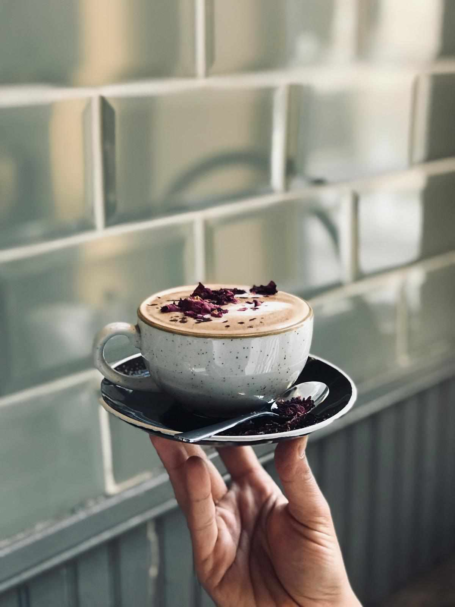
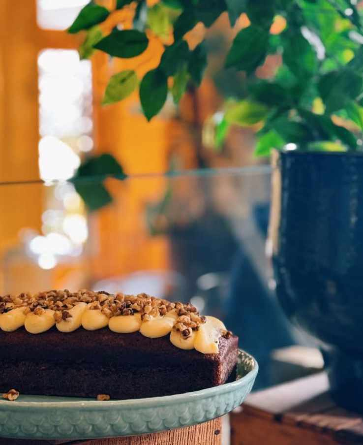
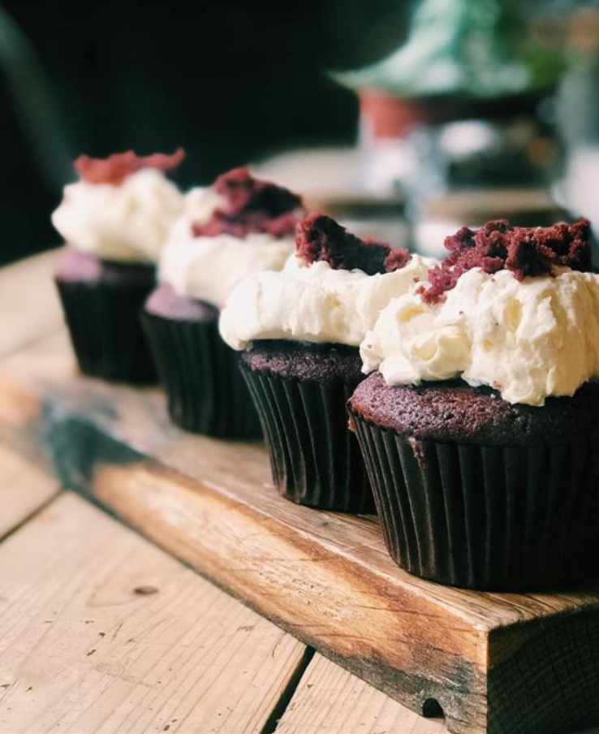
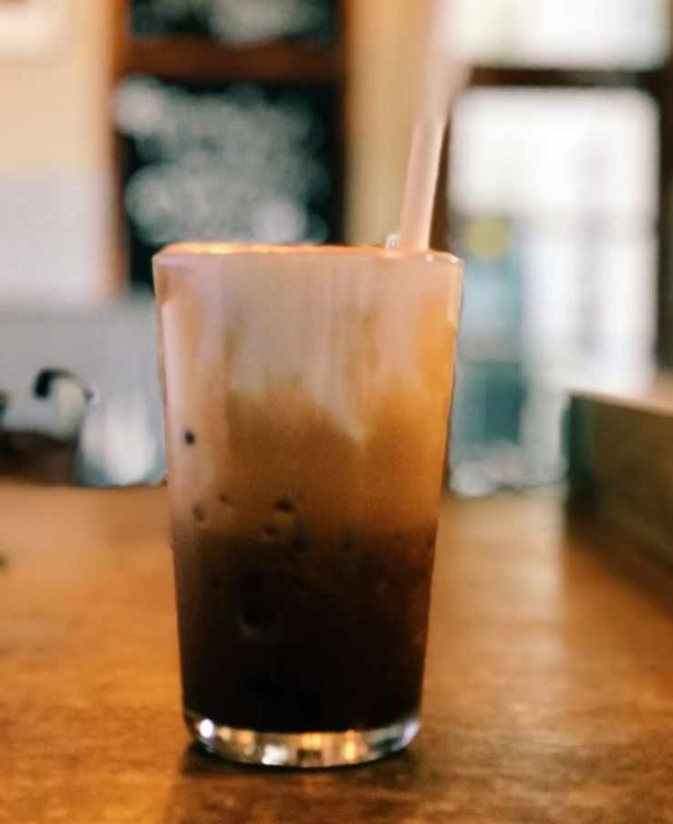

The café serves coffees, teas, fresh juices, and smoothies. Its menu features homemade cakes and pastries, including favorites like blueberry muffins and our carrot cake. Savory options such as sandwiches, pastries and cater to various dietary preferences, including vegetarian and vegan choices.



